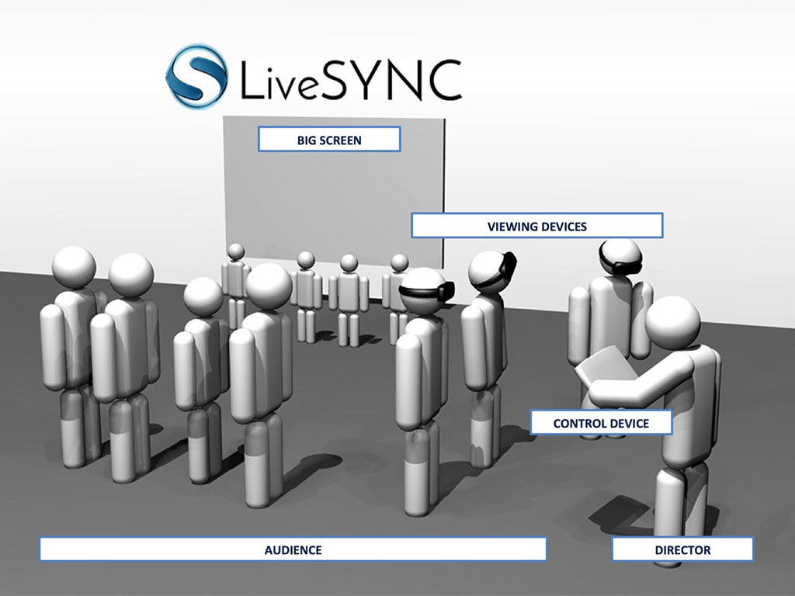
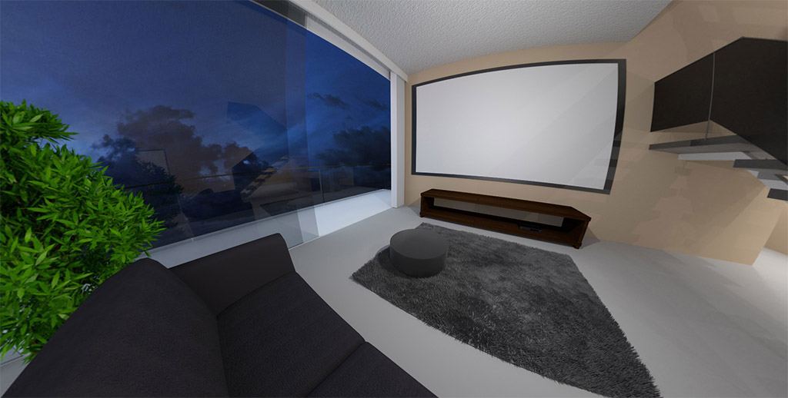

1. Introduction¶
Welcome to LiveSYNC¶
Since you are reading this user guide, you must have decided to learn more about 360-degree photos, videos, and a tool called LiveSYNC. That is awesome! We, too, believe it is time to finally get rid of the limitations of the image frame. It is time to start capturing the World as we humans experience it. In a way that a viewer can look around and feel like being there. In other words, in 360-degrees.
To make most out of 360-degree content you need proper tools. Not only cameras and software for creating content. It is even more important what comes after that: how you will utilize your content. This means carrying out tasks such as annotating, presenting and sharing. This is also where LiveSYNC as a product comes to picture. You will be surprised how much you can achieve with it.
We will start with the big picture to learn why this is the right time to start using 360-degree content. Then, we will discuss how LiveSYNC was born and what needs it was built to satisfy. We will conclude this chapter by going through some key concepts in LiveSYNC.
Tip
If you can't wait to start using the app, begin reading from Chapter 2. Installing. Continuing from there provides answers to how-questions. Return here when you are ready to find answers to why-questions.
The Big Picture¶
Let's begin by taking a few steps back to see the big picture. We will discuss trends in human communication and photography, and how 360-degree imaging fits in. Next, we go through recent advancements in camera and network technologies, and how they make 360-degree content creation and delivery feasible. We will paint a picture of where we seem to be going, and learn what role 360-degree imaging has in the long run.
Communication Becomes Visual¶
During the past few decades, the way humans communicate with each other has changed. First, we learned to connect computers together locally, then globally. We made a giant web of wires where messages can travel from one corner of the planet to another in a fraction of a second. Building Internet was a major breakthrough in communication. In its early days, bandwidth was low and it was practical only for transmitting text. You had to pay for usage by the minute, so it was wise to write an email first and go online only to send it. How odd that must sound to the children of the current age!
Along the years, many technological advancements made the web faster and faster. We started to use it for other forms of communication that need higher bandwidth. Images and GIF animations started to appear on web pages. Kids learned to share music as downloadable MP3s, then full-length movies. Low-latency streaming changed the landscape even more. Voice calls via Skype started to become popular. On-demand video rentals began, and Youtube showed up. Eventually, even traditional media gave up. They brought newspapers, radio shows, and live TV online. All forms of digital communication became available for a single low-cost data plan. Fixed monthly price made it possible to stay online all day long.
As a consequence, we saw a paradigm shift in human communication. Our messaging began to change from textual to visual representation. Young people didn't bother to write long, well thought out emails. They chose to send lots of short messages that were read and replied almost instantly. Tiny images called smileys were added by combining special characters. They were used to communicate common feelings by mimicking facial expressions. Then more complicated, graphical emojis arrived and teens began to skip words. They communicated with cryptic abbreviations and sequences of emojis. Kind of a modern version of the Egyptian hieroglyphs! Later, textual part in many messages had reduced to a caption for a photograph. Now the image had become the message itself. Then we moved on to video. The age of Youtube stars had begun: anyone could start their own TV show with a press of a button.
The world now is more visual that it has ever been in human history. 93% of all human communication is visual. (1)
Why are we so fond of photos and videos? What is wrong with plain old books and letters, you may ask. There is room for all kinds of communication methods. The new ones do not replace the old ones; they add to the options that we have. Yet, we must embrace those methods that come so natural from us: the ones of the visual kind. We can even argue that humans are visual by nature:
Humans process visuals 60 000x faster than text. 81% of people only skim content they read online. People learn 40% better when there are visuals. (1)
To simplify it, the more visual a communication method is the faster we understand the message it carries. Consider an ordinary video. If that small window is so effective, imagine the impact of widening the view to full 360 degrees. Then go further and show it via a virtual reality headset. It is telling that afterward people use words like when I was there, not when I watched that. This is a significant difference. The viewer does not see himself as an outsider, a spectator, but part of the story. Immersion is so powerful that it can even create false memories (2). Another research shows that people recall information better through virtual reality (3). That seems logical: our brains are much better in remembering events that happen to us than stories that are told to us. It is clear that 360-degree video is a very effective communication method.
Interactivity Arouses Interest¶
The advances in imaging technology are pushing another paradigm shift. Traditionally, most features of a photograph had to be decided in advance ie. before the camera shutter closed. Now more and more of these can be changed after taking the shot. Careful planning, expensive camera gear, and interest to technical details still have value but are not mandatory anymore. Ordinary people succeed fairly well even in difficult circumstances. And they enjoy the current interactive nature of photography, where many features are not designed in advance but selected based on their effect to the image. As a consequence, photography is more popular than ever before.
Since the beginning of digital imaging cameras have developed in fast forward. We have reached a point where we have to ask again: what exactly is a camera? Or, who exactly is the photographer? Consider new phones that contain many physical camera modules. When you press the trigger, a set of images is captured. The camera modules trigger simultaneously and take many shots in sequence. Then, artificial intelligence is used for composing one perfect shot. Some of the frames are retrieved from a memory buffer and were taken before you pressed the trigger. Such a camera is a complex combination of hardware, software, and mathematical algorithms. The software is adopting the role of the photographer. It has become a decision maker in the creation process. So, can we still justify calling the person that pressed the trigger the photographer? All he did was point the camera to a certain direction!
It is not surprising that also framing the shot is becoming history. Or, more specifically, we can leave that decision to the viewer of the image. In the 360-degree video, every direction is captured. There are no traces of a camera, a cameraman, or even a tripod. It is a kind of a miracle. Now there is no need to decide even where to point the camera, as everything around the camera can be captured. This has some profound effects, as we will soon see.
Let's take a closer look at this technology. Traditionally, a photographer or a videographer has decided how to frame the shot. What is necessary, what can be left out. This decision is locked at the time of capture. It becomes a permanent limitation. At viewing time, it is not possible to see beyond the frame. In fact, the only possibility to re-frame the shot is to limit the viewing angle even more by cropping the image (ie. digital zoom in). The benefit is that the photographer has the power to make his audience focus on exactly what he wants them to see. But that can also become a lie. Beautiful places you see in photos and movies often look very different when you visit them in real life. For example, the pyramids of Giza are always photographed so that they appear to stand in the middle of a desert. If you turn around, there is Cairo with its 20 million inhabitants! Capturing in 360-degrees tends to show a much more realistic view of the World.
But how exactly are those images made? Imagine a perfect zoom lens that has an unlimited range. If you kept zooming in, you could see a grain of dust on the surface of the Moon. But what will happen if you keep zooming out? You will see more and more of the surrounding area become visible in the image. And then, the two sides of the image suddenly meet each other, producing a full 360-degree view. A 360-degree camera is essentially a camera with a very wide angle lens. When you are zooming in, there is no natural limit where to stop. But when you are zooming out, such a limit does exist: it is where the opposing sides of the image meet. In that sense, a 360-degree camera has a perfect wide-angle lens: we cannot expand the view any further.
We may never be able to manufacture a single lens that could capture everything at once. Yet, 360-degree cameras do exist. How is it possible, then? Again, digital image processing comes to the rescue! Almost seamless representation can be achieved by stitching together many images. These are captured with two or more lenses. Current 360-degree photo and video panoramas capture the world in every direction. In that sense, they are perfect: everything around the camera is in the image. In reality, there is a small distance around the camera where an object can be hidden between the lenses. This has one useful side effect: it allows hiding a small tripod or a selfie stick that is holding the camera.
What is the main difference in 360-degree imaging compared to old school photos? During playback, the viewer is in control of the viewing direction. He can turn around and even look up to the sky or down to his feet. It feels like magic when you experience this freedom the very first time. But soon you will get used to it and begin to expect that all images work this way. So much, that you feel annoyed when you attempt to pan an image and it won't budge; it is a plain old 2D image. You've probably seen how today's toddlers expect that every screen is a touch screen. Likewise, you begin to assume that all images can be panned. This interactivity is what makes consuming 360-degree media so interesting to us. The ability to explore.
360 Cameras for All¶
360-degree photography has come a long way in a short time. Only a few years ago it was unheard of to the general audience. Yet, we can hardly say that 360-degree photographs are anything new. Devoted photographers have been shooting in 360 degrees for quite some time.
For a long time, you had to love this form of art to go through all the trouble. Capturing 360-degree photographs required purchasing a lot of camera gear. A DSLR camera, an expensive fisheye lens, and a tripod with a special panoramic head. To create a single image, you had to take multiple shots. Then move the files from your camera to a PC and run them through a special stitching software. You could spend half an hour adding control points, masking the tripod, and many other steps. It took several minutes from a powerful PC to render the image into a file. After months of trial-and-error, you learned to tune your camera gear and shooting process. Quite a learning curve!
This is how professionals still work. Of course, everything has become faster, easier, and better looking. Yet, the real revolution was the arrival of the integrated consumer and prosumer level 360-degree cameras. With a few hundred dollars you can now buy a point-and-shoot camera and control it with your phone. The phone also stitches the image and does a pretty good job. The result is not comparable to a professionally made panorama. But, it is quick, cheap, and easy enough for anyone to make. Moreover, it is good enough to be useful. That is the recipe for general adoption.
We cannot talk about 360-degree photography without also discussing 360-degree videos. It is, after all, a natural step forward. If you can create a single 360-degree photograph, you can also create a video. Just capture lots of photos in sequence, right? It is not that easy in practice. For video, you need many cameras which need to be synchronized. Because of their physical size, the cameras cannot be in the optimal pivoting point. You must deal with parallax and hence more difficult stitching issues. GoPro action cameras used to be very popular for 360-degree video. They were small, affordable, reliable, and produced good image quality. Popular layouts required using six cameras. Not one of them could fail without ruining the whole shot.
Today, integrated 360-degree cameras capture video, too. All you need to do is press the REC button. After transferring the file to your phone, let it stitch the video together. You can even do live streams, straight from your phone to the tubes. 360-degree camera technology definitely has matured. Monoscopic 360-degree video can be considered a solved problem, and it is ready to be used by anyone. Stereoscopic (3D) 360-degree video is only a little behind.
Note
In the monoscopic 360-degree video there is no depth information. When viewed through a virtual reality headset both eyes see the same image. In the stereoscopic 360-degree video the left and the right eye see a different image. The scene appears to contain depth ie. it is three dimensional. The difference is the same than in movie theaters, where you choose between 2D or 3D screening.
Bandwidth Brings Presence¶
Being able to look around is not all that it takes to make us feel being there. Not even if the image is stereoscopic. Another key to immersion is the amount of detail. It is another aspect of the amount of information an image represents. A 360-degree image covers the whole field-of-view. But we must also preserve as much detail per degree as possible to make the image look realistic. Or, at least as much as a human eye can distinguish! This is more easily said than done since a human eye is an amazing camera and a lens in a very compact form. It is able to capture an enormous amount of information in a fraction of a second.
This brings us back to bandwidth and the Internet. Whenever transfer rates take a step forward, we find a richer communication method. Something that provides a better way to capture and share what is happening around us. Often it is a way that communicates presence better. First, we had to describe everything in text, then we could add images and photos, then sound and music, then video... Can you imagine what will be the next step on this path?
One way to understand it all is to see the changes as stepping stones towards telepresence. Fancy word, but it is only a combination of technologies that allow a person to feel as if they were present in another place. And maybe also in another time. That other place can be real or imaginary.
This is where we are heading. And step by step, that feeling of being there is becoming stronger and stronger. When we are reading books, we see the story unfold in our own imagination. When we are looking at photos, we see snapshots and imagine the rest. When we are watching movies, we see what someone else has already imagined. When we are wearing a VR headset, we become eyewitnesses to the story.
Note
Notice that we are not talking about a solution where a human would not be able to recognize if the world is real or virtual. Telepresence is good enough already when we allow ourselves to forget the fact that it isn't real.
Tracing the path backward from the goal to the present, we are not there yet but not that far off either. During the past few years, technology has matured enough to solve one profound roadblock. This is the image frame that limits our field of view. Think about it: how could you ever feel being there if you weren't even able to turn your head to look around? Least, you should be able to observe the surroundings by looking in any direction you want. And experience the view and soundscape change corresponding to your head movements.
Virtual reality headsets are one way to make this workable. Computer games and movies are an endless source for imaginary worlds. They are the driving force for virtual reality. However, the real world surrounding us must not be forgotten: it is, after all, where we live in! It can be documented with 360-degree photography and 360-degree videography. Accompanied by 360-degree audio, perhaps.
Of course, 360-degree cameras and VR headsets are not enough. They are solutions for content creation and consumption. We must also be able to transmit the content from the camera to the headsets. But, moving from traditional video to 360-degree spherical video requires over tenfold increase in data rate. It is not coincident that 360-degree content is becoming popular now. Internet is just becoming fast enough to carry the amount of data 360-degree video requires.
Traditional photos are great for saving memories. Videos are perfect for telling stories and documenting events. What is the main reason for shooting something in 360-degrees? It is the feeling of presence. And it is much stronger when the video is combined with 360-degree audio and viewed through a VR headset. The memories are brought alive as space and time where you can step inside. You'll feel like being there. This feeling of (tele)presence is what we want to achieve. We need enough bandwidth to make it look so good that our brains allow us to forget it isn't real. And we are gaining this capability now. Fiber and 5G networks are exactly what 360-degree content needs to thrive.
Example
Consider a single frame of 4K video that contains 3840 x 2160 = 8.3M pixels. A wide-angle shot could contain 90-degree field-of-view (horizontal). This yields 3840 / 90 = ~43 pixels per degree. To produce a 360-degree view (horizontal), we need four similar frames side-by-side. This yields 4 x 3840 = 15360 pixels. A full spherical image is 360 degrees horizontally but only 180 degrees vertically. Thus, we need only half of that number vertically. To experience "4K quality in 360-degrees", our image frame would have to be 15360 x 7680 = 118M pixels. This is over 14 times the amount of pixels in a 4K video frame!
What if we settle with "FullHD quality in 360-degrees" or 1920 / 90 = 21.3 pixels per degree? Then our image frame size becomes 7680 x 3840 = 29.5M pixels, which is "only" 3.5 times the amount of pixels in a 4K video frame. 360-degree cameras that capture video in the 7680x3840 resolution are becoming commonplace. This means that we are now entering the "FullHD" time of the 360-degree video. "4K" time of the 360-degree video is still a few years away.
We can also calculate it in another way. High quality compressed 4K video requires roughly 40 Mbit/s bitrate. Scaling up with factor 3.5 yields 140 Mbit/s data rate for "FullHD quality in 360-degrees". This could pass through the best current mobile LTE networks that offer a 300 Mbit/s peak data rate. Yet, with factor 14 the requirement becomes a whopping 560 Mbit/s for "4K quality in 360-degrees". We will need one gigabit Internet connection to view the 360-degree video in a quality that we know as "4K". Upcoming mobile 5G networks promise such speeds.
In reality, many clever solutions have and will be developed to reduce the need for bandwidth. The capability to transmit high-quality 360-degree video is coming. And sooner than it appears when only bandwidth is considered.
What's Next?¶
This is the big picture: we've gone through text, image, sound, and video already, and now 360-degree imaging is here. It is easy and cost-effective enough to be used in daily activities. It is time to take it in use.
We can also see the fog disappearing and revealing the next stepping stone. Monoscopic 360-degree video allows the viewer to turn around. The stereoscopic video provides depth cues, but you still cannot move. Volumetric video changes this. It will allow moving your head and even taking a step inside the 360-degree view. This will make us feel about being ever more present. That technology is still in its infancy and needs a few more years to begin to work. And many more before the cameras and networks catch up.
There is no reason to wait, though. The future will always bring better, more advanced technology. We can also argue that moving from monoscopic to stereoscopic to volumetric are evolutionary steps, but moving from square video to 360-degree video is a revolution. Improving depth perception is great as the feeling of presence becomes stronger. But widening the field-of-view is one remarkable leap that opens so many possibilities at once. So, let us consider what it means that we can now let go of the limitations of the image frame. After 200 years of photography, that is already a miracle of its own!
Making LiveSYNC¶
Now we have covered the big picture and understand the significance of 360-degree imaging. It is time to move on to the LiveSYNC application and its role in this playing field. First, we will take a look at the market situation of 360-degree software in general. Next, a brief summary of the history of the LiveSYNC product follows. We will also discuss use cases that had a great impact on designing the user interface and original features of the app.
Market Situation¶
The rise of 360-degree content production did not go unnoticed. In the early days, special software was needed for stitching and editing 360-degree content. And then again for rendering it on your website. Now, traditional video editing tools have been extended to support 360-degree video. You can stitch and edit a 360-degree photo with the de facto standard Photoshop application. The outcome can be embedded in your Wordpress blog. Previously, you needed a custom app if you wanted to play 360-degree video in a phone or a tablet. Today, most social media services support at least basic monoscopic 360-degree content. Some also support viewing via a VR headset. This is great if you shoot and share content for your friends or potential customers. In other words, if it is for fun or part of your mass-marketing strategy.
But what about content that is not intended to be available in public? Or, not allowed to be uploaded to 3rd party services, to be shown next to your competitor's ad? How about controlled situations, such as private product presentations or employee training? What about using 360-degree media as part of speeches and lectures? Or, using 360-degree content as a canvas for annotating points-of-interest? And then sharing this information as visual memos or work instructions? Images and videos are very versatile, and 360-degree variants even more so. For industrial users, it is essential that tools can be customized and integrated. Clearly there are many, many needs to satisfy. This means that various kinds of professional tools and services must be developed. Customizable solutions that go beyond what the freemium mass-market services can offer.
Moreover, mass-market has started to grow slower than expected. Consumers have plenty of other options for entertainment. It is not easy to convince them to purchase yet another media device. Especially at times when technology develops fast many consumers tend to postpone purchasing: the next year's model is expected to be much better. Also, the language of storytelling must change to accommodate to this new medium. Consumers expect high-quality experiences. But content producers need time to experiment, to figure out what works and what doesn't. Telling stories in 360 degrees is different. Hence, the user experience has been lacking from what consumers are expecting and they are in the waiting mode.
The professional market has no reason to wait for the consumer market to mature. The benefits of 360-degree media are available for them now. From consumer point-of-view, it is a question of spending money to yet another entertainment option. From professional point-of-view, it is an investment that can create great cost savings. To name a few examples, the ability to virtually visit a place can reduce travel costs and more efficient training makes new employees productive faster. Postponing spending money can be well justified, but postponing saving money cannot. All in all, there is great need for 360-degree solutions for professionals and motivation to take them in use today.
LiveSYNC 1.0¶
In 2012 a Finnish software company Finwe Ltd. was looking for a new direction. They had years of experience in motion sensors, 3D graphics, and user interfaces. As an experiment, they created a 360-degree photo player. The purpose was to demonstrate a state-of-the-art sensor fusion algorithm on mobile devices. The player was soon extended to support 360-degree video playback. It worked so well that Finwe showcased it in Mobile World Congress in 2013. The reception was good and started to turn Finwe's focus on 360-degree media. It also kickstarted the development of Finwe's own 360-degree rendering engine, Orion360.
A few years later, Finwe was one of the leading companies in 360-degree app development. They had created over 100 custom apps for 360-degree video playback. Besides, their Orion360 engine had been licensed to hundreds of other apps. Yet, the market was in change. The giants of the Internet announced support for 360-degree media one after the other. This meant that the need for custom apps was in decline. These apps were also very similar to each other. Most of the market could be handled with simple template-based variants. There was also a possibility that recent developments in HTML5 would make custom apps obsolete. The 360-degree video was becoming commonplace. It was quickly transforming from a novelty to a utility. It was time for another change in direction.
To stay ahead of things, Finwe decided to create a new product that would combine some of their best technologies. The target was a generic player app with an easy-to-use remote control feature. The idea was to create a tool for professionals for presenting content live to different sizes of audiences. In the heart of the app was a technology that allowed mirroring the screen of one device to another. This was done in a way that very little data needed to be transmitted. It allowed controlling and observing many clients in parallel. The solution also worked in crowded places where Wifi was congested. Finwe demoed the concept at Mobile World Congress in February 2017. The feedback was very encouraging. After two months of furious development, Finwe released LiveSYNC 1.0 for iOS and Android in April 2017.
Use Cases¶
360-degree content is best experienced using a virtual reality headset. The experience is so immersive that it also isolates the viewer from the rest of the world. It becomes a problem when you are presenting content to another person. How to communicate with him during playback? For example, to give instructions, ask for an opinion, or to share the experience. Not being able to see what he sees forces you to repeatedly ask what's on the screen. How awkward!
LiveSYNC removes this barrier by mirroring the VR headset's view to a control device. This view is updated in real-time and can be further shared to a big screen: a TV or a projector, for instance. With LiveSYNC, you can connect multiple headsets to a single control device. Play content on all devices in sync, and observe their views from a gorgeous video mosaic. You can also mix in regular 2D photos and videos, for example, your company's slide deck and promo video. This makes LiveSYNC a versatile all-around presentation tool.
During the presentation, another communication problem frequently arises. By observing the other guy's view you know what he is currently looking at. But now you have to find the words to explain where he should be looking at, to see something you want him to notice. That becomes equally awkward.
With LiveSYNC, you can drag an arrow over the 360-degree view. This icon will appear on all connected devices. You can even move it in real-time by dragging it to another place. This makes communication much easier: look at where the arrow is pointing or it is under the arrow. Simple.
Note
You may wonder if the other guy's view can be panned from the control device. Wouldn't this make things even easier? Just turn his view to the correct direction, right? Consider a moment that it is you who are wearing a VR headset. Suddenly your whole world begins to spin when another person remotely pans your view. You will likely feel nauseated. Hence, this kind of control is not allowed. It is also good to remember that exploration is what makes 360-degree content interesting. Forcing the point of view in any way should be minimized. It is better to use hints such as arrows, lights, or sounds. The same things that we use in real life to get someone's attention. We don't just go and turn someone else's head!
Imagine that you are selling your summer cottage. You've made a set of 360-degree photos and videos. Potential buyers can virtually visit the place without driving hours to the destination. Everybody wins when uninterested buyers can be filtered out early on. But wouldn't it be convenient if you could also add a few notes to your images? To highlight things you want them to notice and remember. Or, automatically stop your 360-degree video tour to certain frames? Saving all annotations would also help. You probably need to show the presentation several times.
All these are built-in features in LiveSYNC. Drag & drop icons from clipart sets over the photo or video content. Add a caption for each tag, or create your own signs and use them instead. Save the annotations and they will be loaded the next time you play this content. Powerful annotation features make LiveSYNC stand out.

The enterprise version of the LiveSYNC app goes much further. It has been developed in close co-operation with industrial clients. You can use a built-in editor to create or edit a project. Import media content from the camera roll. Add interactive hotspots. These can even fetch data from the network in real-time. Import 2D and 3D maps with camera paths. A really useful feature is to be able to export all the notes you've made as screenshots. They are placed into a visual PDF report, which you can send to your colleagues right away. As an example, take a quick tour on your construction site with a 360-degree camera. Add new work instructions. Export to PDF and mail away. All in 15 minutes. That's what we call instant digitalization.
Since its initial release, LiveSYNC has come a long way. We are very excited about the features that are being developed right now. We feel that LiveSYNC is just spreading its wings. After years of working with 360-degree media, we get still excited about it. It is amazing what is possible when an image or a video covers the full 360-degree view.
Key Concepts¶
As every software product, also LiveSYNC is based on a few key concepts. For the user of the product, it is very useful to be aware of these: everything feels more logical. Also reading the documentation becomes easier. Some of the terms we use have very specific meanings. Hence, the reader should get familiar with the terms and concepts presented next.
Presenting¶

When presenting content to other people, we assume that one person is in control of the situation. Let us call this person the director. The people who are following the presentation are called the audience.
The director acts in the role of the presenter. He uses a computing device for sharing content to the eyes of the audience. Let us call this device the control device. The control device is usually a tablet. Sometimes, we may refer to this device as the director's device or the device running in the director mode.
In a typical setting for giving a presentation, the room contains a large TV or a projector. For example, most meeting rooms have one. We will call this device the big screen. The connection between the control device and the big screen can be wired or wireless. Using the big screen is optional but often useful: everyone can see the same content.
With 360-degree media, it is essential that everyone can explore the view also personally. Look at things they find interesting, and at their own pace. Thus, every person in the audience should have own viewing device. These devices can be phones, tablets, or VR headsets. They can be personal devices or devices that are shared and managed by the presenter. The latter is often more practical. Sometimes, we may refer to these devices as an audience device or a device running in the audience mode.
To stay in control, the director's device must communicate with viewing devices. For example, to send a command to switch to the next slide. (This is the reason why it is called a control device). Before communication can begin, a connection must be established between the devices. It is a two-way connection. The control device sends commands to viewing devices. The viewing devices send status messages to the control device. Thus, the director is able to see that everything is OK on each viewing device and assist if necessary.
Communication between the control device and the viewing devices is wireless. It is based on common radio technologies. For example, Bluetooth allows controlling a small group of devices without network infrastructure. It works well also in crowded places. A large number of viewing devices can be controlled via an Internet connection. This is based on a cloud service called GlobalSYNC. The service is run by Finwe, the developer of LiveSYNC. It requires either Wifi or mobile data for Internet access.
Many presentations can take place simultaneously, even in the same room. This is needed for example in trade shows when many presentations are run at the same or adjacent booths. To make this workable, communication takes place on different LiveSYNC channels. Messages sent on one channel are received by devices on the same channel.
To assist a particular audience member who needs help, each device is given an ID. We call it the device's LiveSYNC name. Once connected, this name appears in the control device. It is shown over a mirrored view from that particular device.
Thus, on each device, one must configure a few things. Whether it is the director's device (director mode) or an audience device (audience mode). The name used for identification. Which connection method to use (e.g. Bluetooth or GlobalSYNC). Which channel number to join. These are typically pre-configured before a presentation. A new channel can be reserved and taken in use also spontaneously. Created configuration is called channel configuration. A device can have multiple channel configurations, but it can join only one channel at a time.
 A view to the lobby. Connection info is shown on the white screen.
When a configured channel is selected from the app's home screen, a viewing device moves to lobby screen. The user will wait there until a connection to the control device is established. Hence, the lobby is sometimes called the waiting room. The control device will move to the director's workspace. That consists of multiple tabs. For example, the mosaic tab allows observing mirrored views from all connected devices. The player tab is used for controlling the presentation. Changing content, controlling video playback, adding points-of-interest, etc. We will go through it in detail later in this guide.
These concepts will become more familiar in the next chapters. You don't need to memorize the terms or their exact meaning to be able to use the app. They are presented only to help you understand how the software works. Also, to make it clear what we mean by these terms. They appear frequently in the documentation. And, to make it easier to understand why certain things are asked during the setup phase.
Understanding View Mirroring¶
The ability to mirror a view is very central in LiveSYNC. You might be wondering how does it actually work, and what is possible with LiveSYNC and what is not. Next, we will discuss this further.
In general, there are two ways to mirror a live view of one device's screen to another:
-
Streaming video (screencasting)
Principle: Digitally record screenshots from the device's screen, encode them into a video stream, and send this stream to another device over a network connection.
The mirrored view is an exact copy of what the other device is drawing on its screen. The mirroring feature can be implemented on the platform level. Thus, it is available for all apps or the whole desktop environment.
There are some downsides. Streaming high-resolution video consumes a fair amount of CPU/GPU resources. This consumes power and dissipates heat. It also requires a lot of network bandwidth especially when there is movement on the screen. It does not scale well: the receiving end becomes a bottleneck when more devices connect. Furthermore, when using a VR headset, we do not actually want to stream an exact copy of what is on screen. Instead of the distorted double barrel view, we want to mirror a normal view.
-
Streaming commands
Principle: Integrate deep into the app and send only commands that allow the receiving end to reconstruct the view from the same assets.
The benefits of this method include low CPU/GPU and power consumption. Trivial use of network bandwidth. Scalability. It is also possible to render the mirrored view a bit differently compared to the source device.
There are some limitations. All devices must have local copies of the assets required for reconstructing the view. In the case of video, all devices must watch the same content in sync. Else, the control device needs to decode multiple streams. Then hardware resources become the bottleneck.
Many devices have type 1 screen mirroring built-in. This is often handy for mirroring your phone's screen on TV at home. Or, in a meeting room at the office. However, mirroring a view by streaming video over Wifi becomes often impossible in crowded places. The public hotspots become congested and/or the organizers do not even allow using own Wifi hotspots.
LiveSYNC uses the type 1 method for mirroring the view of the control device to the big screen. This works, because there is only one big screen to connect to. We also want to show an exact copy of the screen (or part of the screen). When Wifi doesn't work, HDMI cable can be used.
LiveSYNC uses the type 2 method for playing content on the viewing devices and mirroring their views to the control device. This approach allows operation in crowded trade shows. Especially, when Bluetooth technology is used for communication. It also scales well. Observing a large number of viewer devices is possible.
Note
A common question is whether LiveSYNC can be used for mirroring the views of other applications, such as games. It becomes clear from the explanation above that this is not feasible. Integrating into 3rd party apps is not possible. Thus, LiveSYNC cannot add anything to the platform's own type 1 screen mirroring.
To recap, presenting with LiveSYNC requires using the LiveSYNC app on each participating device. Mirroring works only between the LiveSYNC app instances. It is based on more efficient type 2 command streaming. The only exception is the big screen device, which does not need to run the LiveSYNC app. Mirroring from the control device to the big screen is type 1 streaming, typically via an HDMI cable.